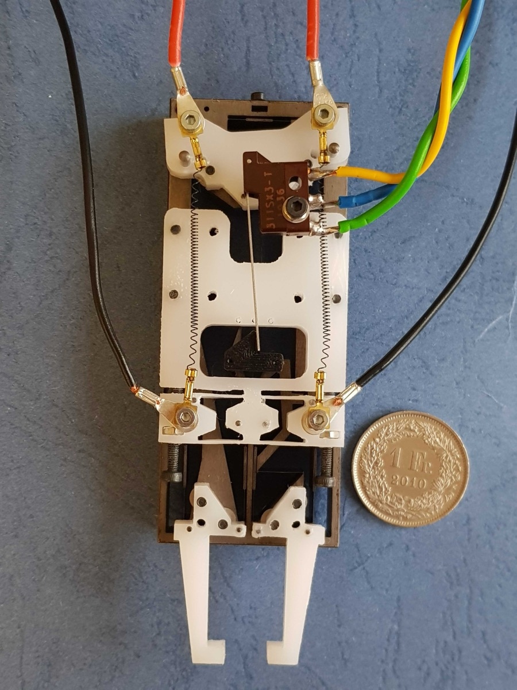
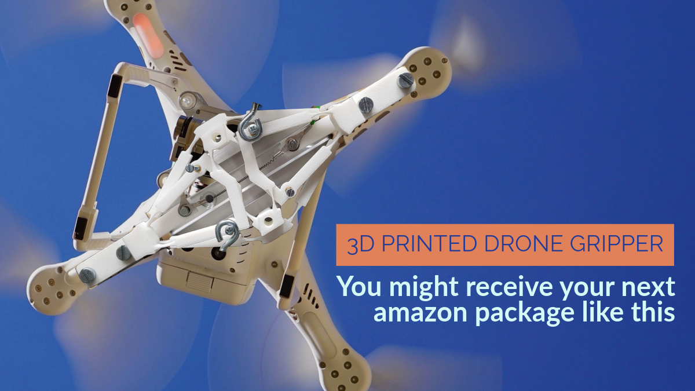
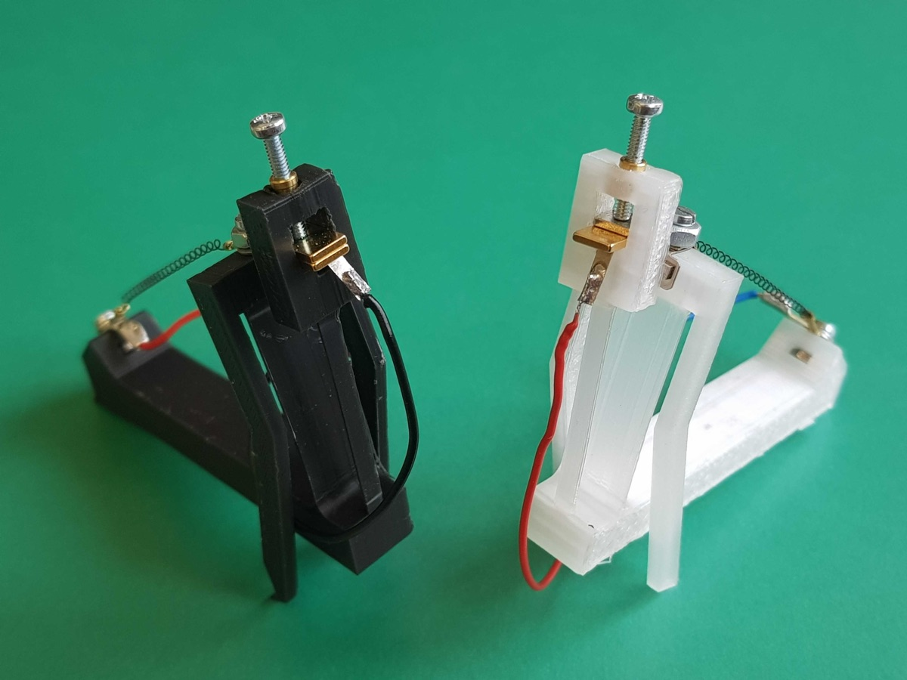
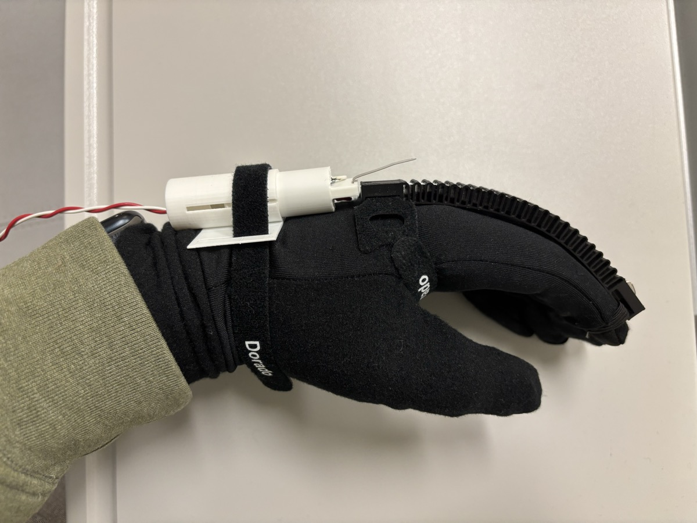
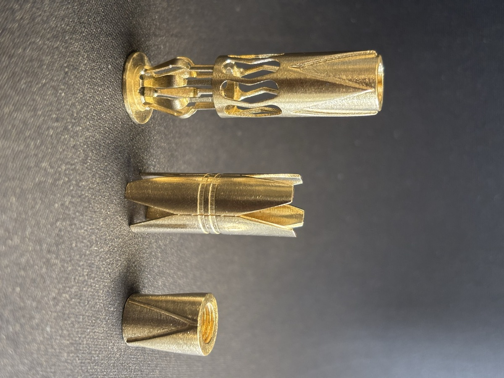
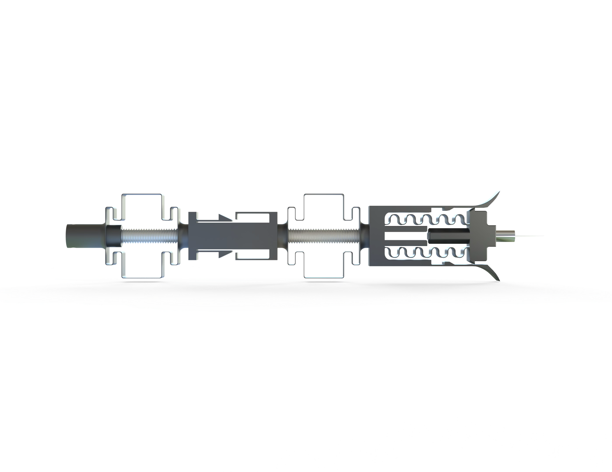
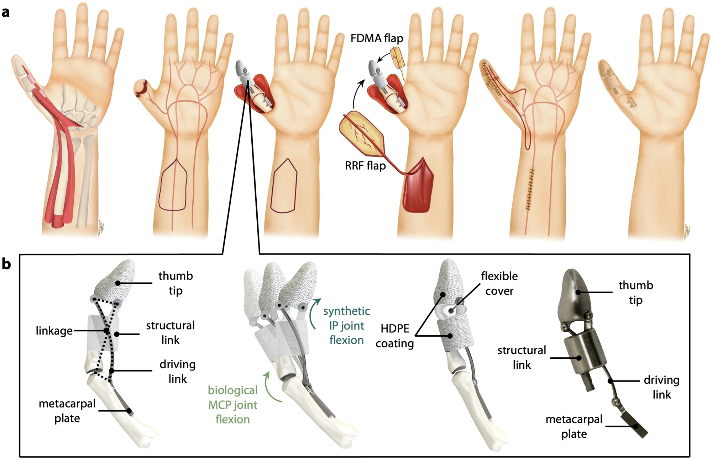
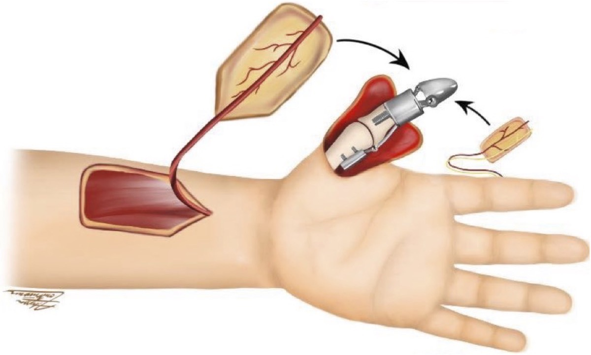

PhD Roboticist · Smart Materials & Actuators · Biomimetic Robotics

01
Most grippers waste energy holding what they've already grabbed. This one doesn't. A flexure-based end-effector powered by antagonistic SMA coils, it snaps between open and closed states and consumes power only during the transition, not while maintaining the grasp. The bistable snap-through behaviour is engineered into the structure itself using a precision-buckled beam, analytically modelled via Euler-Bernoulli beam theory, producing a defined force threshold, repeatable actuation, and zero wear over cycles. Compact, lightweight, and passively stable in both states.
02
Seventeen grams. No motor. No gearbox. No tether. This four-prong compliant gripper is 3D-printed and powered entirely by SMA wire, exploiting the exceptional energy-to-weight ratio of shape memory alloys to deliver meaningful grasping force within an envelope most actuators cannot match. The structure was not designed by hand: topology optimisation algorithmically generated the geometry, finding load paths and material distributions that intuition alone would not reach. A self-biasing design means the gripper passively conforms to cylindrical payloads without active control.

03
Not a device worn on top of the body. A device implanted inside it. This fully implantable actuator measures just 9 mm in diameter and 30 mm in length, yet generates forces comparable to a native lateral gastrocnemius muscle belly, which it directly replaces via bone anchor and Achilles tendon fixation. Validated in a bipedal animal model through live survival surgeries and cadaveric specimens, the actuator operates at up to 770 mm/s, equivalent to 77 stroke lengths per second. It functions as a tunable clutch: a programmable slack length modulates the timing and magnitude of assistive force during each gait cycle, reducing muscular demand at no additional metabolic cost. Where exoskeletons fail because patients stop wearing them, this device has no compliance problem. It is already inside.
04
No microcontroller. No sensors. No battery-hungry control logic. Just a 9.7g robot that crawls. Powered by a shape memory alloy mechanical oscillator, this untethered robot generates a two-anchor crawling gait through a periodic snap-through cycle regulated by a passive magnetic latch. The locomotion emerges entirely from structural mechanics: the oscillation frequency, gait timing, and ground contact are all encoded in the physical design. It is a proof that useful, coordinated motion does not require computation.


05
One print. No support material. No assembly. This compliant finger orthosis is designed to assist both flexion and extension from a single 3D-printed part, using a sinusoidal flexure pattern that bends naturally with the finger while transmitting force in both directions. There are no hinges, no fasteners, and no post-processing. FEA-driven parametric optimisation across wall thickness, width, and pattern spacing gives full control over device stiffness without redesign, making it trivially adaptable to different users and actuator pairings. It is a demonstration of how compliant topology can replace entire subassemblies without sacrificing function.
06
This device turns failure into a feature. A staged-deployment bone anchor that activates through a sequence of controlled mechanical breakages, each fracture occurring at a precisely designed load threshold to progressively engage the bone, apply a calibrated tensile preload, and promote long-term osseointegration. The entire sequence is passive, deterministic, and requires no sensors, no electronics, and no external trigger once implanted. A complex, multi-step deployment is encoded entirely in geometry. The mechanism does not need to be told what to do next; it already knows.


07
What if a robot could walk without a brain? This sensorless, electronics-free crawler navigates the inside of arteries by encoding its gait directly into a compliant structure. There is no controller sequencing the leg movements, no actuator switching logic, and no feedback loop. Instead, the interaction between the robot's compliant legs and a variable tube profile programs the locomotion cycle purely through mechanics. Tune the geometry, change the gait. The robot does not process its environment; it is shaped by it. Zero computation, full autonomy.
08
Traditional prosthetics are designed to fit a body that was never designed to receive them. This project rejects that premise. The biosynthetic thumb co-engineers the surgical intervention and the device in parallel: the procedure creates an optimised anchor and sensory interface, while the prosthesis geometry is built around the modified anatomy. Neither is designed around the other; both are designed together. The result is improved mechanical coupling, better proprioceptive feedback, and a device that functions as part of the body rather than an attachment to it.


About
I design robots that move like living things. By encoding intelligence directly into materials and structures, using smart alloys, compliant mechanisms, and biomimetic design, I build systems that don't just assist the body, but become part of it. From implantable actuators to prosthetic limbs, my work sits at the intersection of humanoid robotics and human augmentation.
My goal is to build the next generation of physical AGI and push the boundaries of what machines can do. I hold a Ph.D. in Robotics and am the inventor of 3 patents and author of 20 peer-reviewed publications.
Research
20 peer-reviewed publications and 3 patents across top robotics venues. View on Google Scholar →
Get in Touch
Open to new roles, research collaborations, and consulting opportunities in humanoid robotics and biomedical devices.
Download CV (PDF) seanthomas0409@gmail.comLos Angeles, California